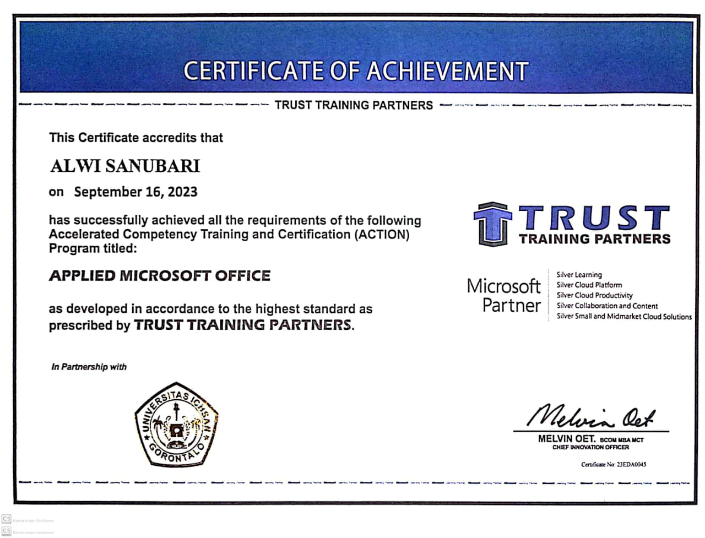

Sistem Prediksi Penyakit Jantung
Platform digital untuk memprediksi risiko penyakit jantung berbasis AI & Machine Learning. Memberikan gambaran awal dari faktor risiko pengguna.
Google CoLab • Gradio
Lihat
S.Kom — Sarjana Komputer
Lulusan S1 Teknik Informatika dengan fokus pada pengembangan keahlian teknis dan interpersonal. Pengalaman kerja di Kejaksaan Negeri Kota Gorontalo (Bagian Pidana Khusus) memperkuat kemampuan dalam manajemen data digital. Melalui program MBKM, saya mengasah komunikasi & kolaborasi tim. Individu cepat belajar, menyukai tantangan, dan siap berkontribusi maksimal.
Lulusan S1 Teknik Informatika dengan fokus pada pengembangan keahlian teknis dan interpersonal. Pengalaman kerja di Kejaksaan Negeri Kota Gorontalo (Bagian Pidana Khusus) memperkuat kemampuan dalam manajemen data digital. Program MBKM melatih komunikasi & kolaborasi tim. Siap menghadapi tantangan baru untuk memberikan kontribusi terbaik.
S1 Sarjana Komputer — Universitas Ichsan Gorontalo (2021 - 2025)
IPK 3.97/4.00
Penerapan Metode ANN Untuk Prediksi Penderita Penyakit Jantung
Platform digital untuk memprediksi risiko penyakit jantung berbasis AI & Machine Learning. Memberikan gambaran awal dari faktor risiko pengguna.
Aplikasi berbasis data untuk memprediksi jumlah mahasiswa registrasi baru, membantu universitas dalam pengambilan keputusan strategis.
Platform pemesanan paket wisata Gorontalo yang menghubungkan wisatawan dengan destinasi & layanan lokal untuk pengalaman wisata terbaik.
Sertifikasi resmi Microsoft Office (2023) membuktikan keahlian dalam penggunaan Word, Excel, dan PowerPoint secara profesional.
Sertifikasi kompetensi BNSP bidang Junior Web Developer (2025) mencakup keterampilan merancang, membangun, dan menguji aplikasi web dasar.
Microsoft Windows
Word, Excel (Pivot, VLOOKUP, IF, Charting), PowerPoint profesional.
Teliti, Rapi, Bertanggung Jawab, Kerja Tim, Komunikasi, Manajemen Waktu.
Indonesia (Fasih), Inggris (Menengah)